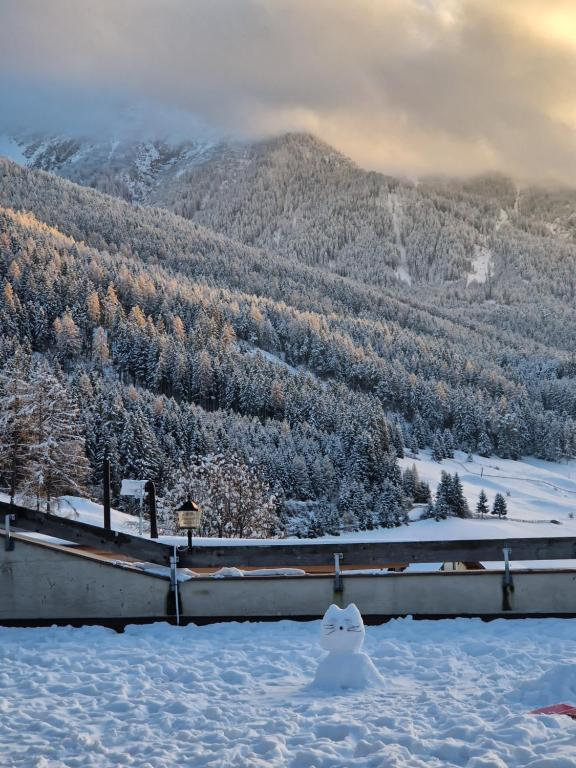
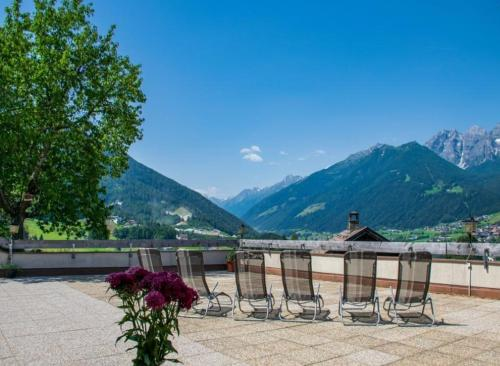
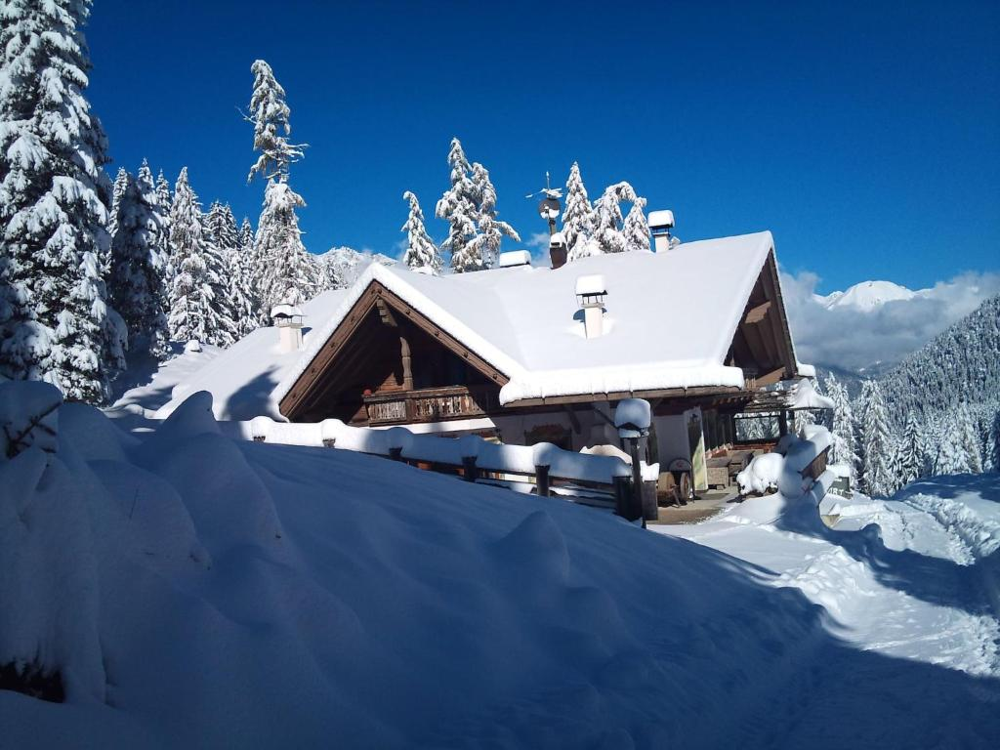
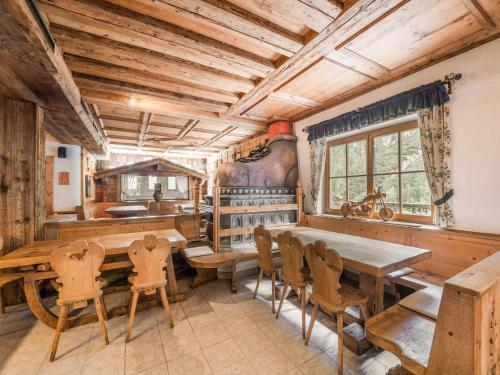
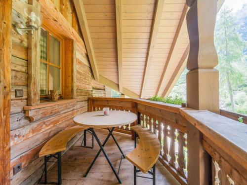
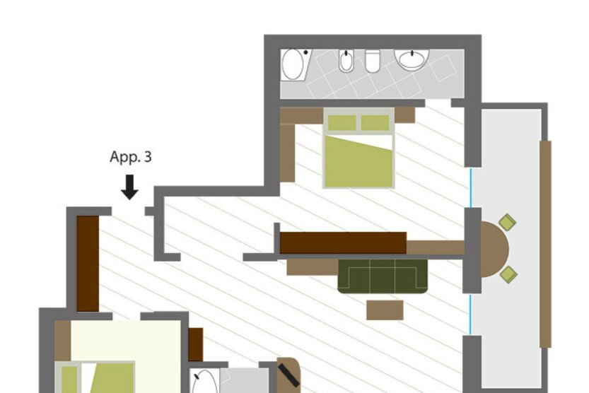
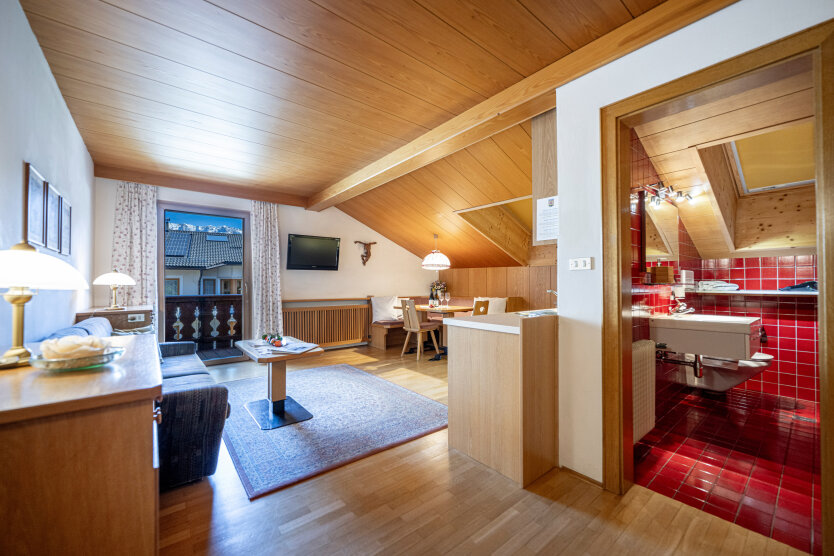
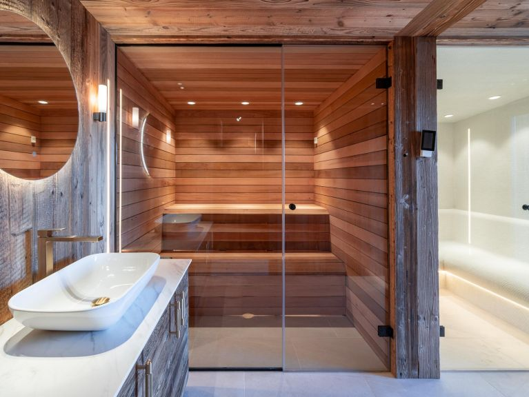
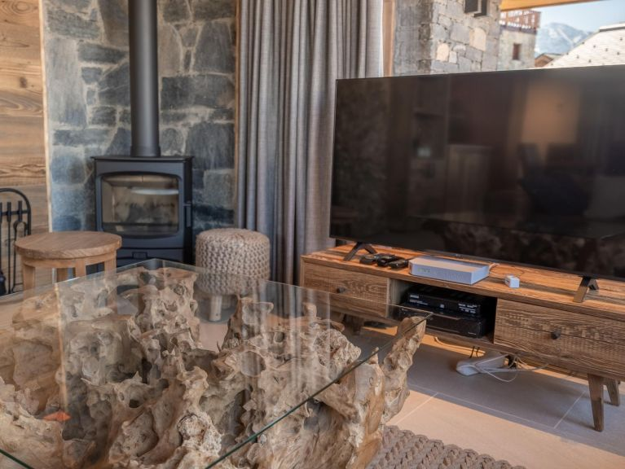

Every price below is a real quote for 10 adults pulled through the booking calendar on the stated dates — not an indicative “from” rate. Totals per person exclude food and drink.
Getting there
The ÖBB Nightjet runs Amsterdam → Innsbruck every night, which turns two travel days into two nights of sleep and removes flights and ski-bag fees entirely. For the short Austrian trips that means boarding Wednesday evening and skiing from Thursday morning.
Wed
19:00
Amsterdam C — NJ 421
Thu
09:14
Innsbruck · bus up the valley
Thu–Sun
3.75 days
on snow from ~11:00 Thu
Sun
20:30
Innsbruck — NJ 420
Mon
10:00
Amsterdam C
France is the exception. Eurostar Snow runs direct, Amsterdam Centraal
05:24 → Bourg-Saint-Maurice 14:41, but Saturdays only in both directions — so France is a
full Sat–Sat week or nothing. 9 h 17 m, one train, no night travel.
The options
1
€55pp / night


Cheapest that works
House
€1,659
3 bedrooms · 130 m² · sleeps 10
Lift pass
Stubai Skipass 4 days €267.90 — covers the glacier, Schlick 2000, Serles and Elfer
Night train
Nightjet couchette ≈ €150–220 return
≈ 14 h overnight + 45 min bus
Snow certainty
High
Stubai glacier on the same pass as backup
Ski area & connectivity
Schlick 2000 9 min by road — 22 km of piste, 1,000–2,240 m. Stubai glacier further up the valley. Innsbruck Hbf 27 min.
Total per person
€575–645
excl. food
Ski storage
Cheapest viable option, but 3 bedrooms and 130 m² is genuinely tight for ten. Best suited to a group that doesn't mind sharing.
Price source: Booking.com · quoted 19 Nov 2026
2
Panorama-Ferienhaus im Stubaital
Mieders, Stubaital, Tirol
Thu 21 – Sun 24 Jan 2027 · 3 nights · 3.75 ski days
€65pp / night



Best rooms
House
€1,944
5 double bedrooms · 5 bathrooms · 160 m² · rated 9.8
Lift pass
Stubai Skipass 4 days €267.90
Night train
Nightjet couchette ≈ €150–220 return
≈ 14 h overnight + 50 min bus
Snow certainty
Moderate
Local hill is low and marginal in March; the glacier is a drive away
Ski area & connectivity
Serlesbahnen on the doorstep — but only 8 km of piste, 970–1,600 m. Schlick 2000 28 min, Bergeralm 21 min, Stubai glacier ≈ 45 min. Innsbruck Hbf 36 min.
Total per person
€585–655
excl. food
Sauna5 bathroomsMountain viewBarbecue
Five double bedrooms and five bathrooms is the best sleeping layout found anywhere for ten adults. Free cancellation to 22 Dec. Sold out for every March window.
Price source: Booking.com · quoted 19 Nov 2026
3
Chalet in Stubaital by Ski Slope & Sauna
Neustift im Stubaital, Tirol
Thu 21 – Sun 24 Jan 2027 · 3 nights · 3.75 ski days
€72pp / night



Best house
House
€2,152
6 bedrooms · 3 bathrooms · 400 m² · rated 4.78 (46)
Lift pass
Stubai Skipass 4 days €267.90
Night train
Nightjet couchette ≈ €150–220 return
≈ 14 h overnight + 45 min bus
Snow certainty
High
Glacier-backed; the most snow-sure of the Stubai set
Ski area & connectivity
On the piste. Schlick 2000 9 min, Stubai glacier up the valley. Innsbruck Hbf 27 min.
Total per person
€650–720
excl. food
SaunaOn the slope400 m²6 bedrooms
The nicest house on the list and the only one actually on the snow. Currently discounted from €3,158 as a Black Friday deal — that will expire. Sold out in March.
Price source: Booking.com €2,152 · Airbnb €2,304 · quoted 19 Nov 2026
4
Untersillerhof — full week
Neustift im Stubaital, Tirol
Sat 13 – Sat 20 Mar 2027 · 7 nights · 6 ski days
€44pp / night
Best value per ski day
House
€3,102
3 bedrooms · 130 m² · sleeps 10
Lift pass
Stubai Skipass 6 days €355
Night train
Nightjet couchette ≈ €150–220 return
≈ 14 h overnight + 45 min bus
Snow certainty
High
March needs the glacier — which this pass covers
Ski area & connectivity
Schlick 2000 9 min, Stubai glacier up the valley. Innsbruck Hbf 27 min.
Total per person
€830–900
excl. food
Ski storageBest €/night of the season
The lowest per-night price in the entire sweep, and 6 ski days instead of 4. More total spend, but far better value per day. Note the Nightjet is disrupted from 8 Feb by the Deutsches Eck closure.
Price source: Booking.com · quoted 19 Nov 2026
5
Panorama Apartments Walter
Ortisei, Val Gardena, Dolomites
Sat 23 – Sat 30 Jan 2027 · 7 nights · 6 ski days
€69pp / night



The Dolomites option
House
€4,816
2 apartments in one building · 5 + 5
Lift pass
Dolomiti Superski 6 days €407 (late Jan is the cheaper tier; mid-March is high season at €453)
Night train
Nightjet + Brenner train + bus ≈ €200–290 return
≈ 20 h door to door
Snow certainty
Moderate
No glacier, but very heavy snowmaking; south-facing slopes soften in March
Ski area & connectivity
Under 100 m to the lifts and to the ski bus. Sella Ronda and the full Dolomiti Superski — about 1,200 km across 12 valleys.
Total per person
≈ €1,080
excl. food
Sella RondaSki-in locationDolomiti Superski
The only real Dolomites quote for ten in a target week — and it is two apartments, not one house. No single Dolomites unit sleeping ten was bookable in any target week. If the group drops to 9, a single 4-bedroom flat at Cristlpek in Ortisei comes to €59 pp/night.
Price source: MUSE · quoted 19 Nov 2026
6
Chalet De Vallandry — La Charrue
Vallandry, Paradiski / Les Arcs, France
Sat 23 – Sat 30 Jan 2027 · 7 nights · 6 ski days
€166pp / night



Easiest travel
House
€1,160 pp incl. lift pass
10 people · 5 bedrooms · 3 bathrooms · 145 m²
Lift pass
Included — 6-day Les Arcs pass, plus linen, cleaning, water and tourist tax
Night train
Eurostar Snow direct ≈ €130–190 return
9 h 17 m, one direct train, no night travel
Snow certainty
Very high
High and glacier-backed; the most reliable on this list in March
Ski area & connectivity
Lift and piste 300 m. Paradiski — 425 km of piste, Les Arcs + La Plagne, up to 3,226 m.
Total per person
≈ €1,320
excl. food
Private spaSaunaTurkish steam roomOpen fireCar-free chalet park
By far the easiest journey — one train, Amsterdam 05:24 to Bourg-Saint-Maurice 14:41, and the price bundles the lift pass. But it is the most expensive per person, and all four March Saturdays are sold out. The advertised 'from €623' is an April price.
Price source: Chalet.nl · quoted 19 Nov 2026
When
| Window | Traffic | Availability found |
|---|---|---|
| Thu 21 – Sun 24 Jan | Quiet | All five Austrian houses available. Cheapest tier of the season. |
| Sat 13 – Sat 20 Mar | Quiet | Untersillerhof at its season-low €44 pp/night. Both other Stubai houses sold out. |
| Sat 23 – Sat 30 Jan | Quiet | The Dolomites and France weeks. Most Austrian houses already gone. |
| Sat 6 – Sat 13 Mar | Filling | Nearly everything sold out in Austria; Dolomites available at €94 pp/night. |
| Ruled out — 30 Jan unavailable. | ||
| 4 – 23 Feb | Peak | Carnival 8–9 Feb. Seven countries' holidays overlap. Prices up 40–90%. |
What the research found
Short midweek stays are bookable after all. Chalet agencies are almost
entirely Saturday-to-Saturday, which initially looked like a hard blocker. Booking.com and Airbnb inventory
is not — every January price above is a real 3-night Thursday-to-Sunday quote.
Thursday–Sunday beats Friday–Monday. The same ski-slope chalet is €2,152
on Thu–Sun against €2,689 on Fri–Mon — roughly €500 less for an extra ski day.
Check both platforms for the same house. The Neustift ski-slope chalet
came back €2,466 vs €2,689 on one pair of dates and €2,286 vs €2,304 on another — the cheaper platform
flipped. Booking also returned €2,445 and €2,689 for identical dates minutes apart. Treat any figure as ±10%.
No single Dolomites house for ten was bookable in any target week. That
inventory is weekly and largely gone. The Val Gardena option above is two apartments in one building. At
nine people a single 4-bedroom flat opens up at €59 pp/night.